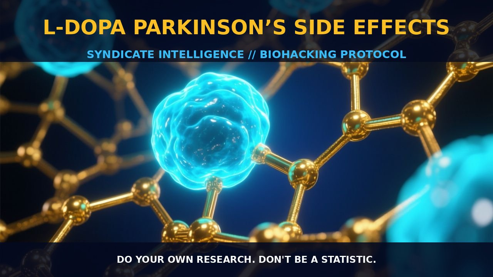

Mechanisms and Management of L-DOPA in Parkinson’s Disease

1. The Mechanism of L-DOPA in Parkinson’s Disease
L-DOPA, or L-3,4-dihydroxyphenylalanine, is a precursor to dopamine, a neurotransmitter essential for movement and reward processing. Dopamine is synthesized from the amino acid tyrosine, and L-DOPA serves as a direct precursor to dopamine, efficiently crossing the blood-brain barrier to increase dopamine levels in the brain. This mechanism makes L-DOPA an effective treatment for Parkinson’s disease, a condition characterized by the progressive loss of dopamine-producing neurons, leading to motor symptoms such as tremors and rigidity.
In the body, L-DOPA is first converted to dopamine by the enzyme DOPA decarboxylase, present in both peripheral and central tissues. The conversion is highly dependent on cofactors and enzymes such as vitamin B6 (pyridoxine), which acts as a cofactor for DOPA decarboxylase. By bypassing the rate-limiting step in dopamine synthesis, L-DOPA provides a more direct and efficient way to increase dopamine levels in the brain, making it a cornerstone in Parkinson’s treatment.
2. Biological Leverage of L-DOPA
L-DOPA exerts its therapeutic effects by increasing dopamine levels in the brain, alleviating the motor symptoms of Parkinson’s disease. However, the use of L-DOPA can lead to various side effects, especially when administered in high doses or over prolonged periods. One notable side effect is dopamine dysregulation syndrome, characterized by compulsive behaviors such as pathological gambling, hypersexuality, and compulsive eating. These symptoms arise from the overstimulation of dopamine receptors in the brain, leading to a dysregulation of reward and motivational circuits.
In addition to dopamine dysregulation syndrome, L-DOPA can cause gastrointestinal side effects such as nausea, vomiting, and diarrhea, as well as cardiovascular effects such as orthostatic hypotension. These side effects are often dose-dependent and can be mitigated by adjusting the dosage and timing of administration. Gastrointestinal side effects are believed to result from the peripheral conversion of L-DOPA to dopamine, stimulating the release of gastrointestinal hormones and neurotransmitters. Orthostatic hypotension is thought to be due to the effects of dopamine on the cardiovascular system, including the dilation of blood vessels and modulation of heart rate and blood pressure.
3. Protocol Implementation
Implementing L-DOPA for Parkinson’s disease requires careful management of dosage and timing to maximize its therapeutic benefits while minimizing side effects. The typical dosage range is generally between 100 to 400 mg per dose, administered three to four times a day. Dosage should be adjusted based on the individual’s response and the severity of their symptoms, often starting with a lower dose and gradually increasing as tolerated.
Timing is crucial, as the effects of L-DOPA can be short-lived, lasting only a few hours. This necessitates frequent dosing throughout the day to maintain consistent dopamine levels. It is beneficial to take L-DOPA on an empty stomach, as food can delay its absorption and reduce its effectiveness. Combining L-DOPA with carbidopa, an enzyme inhibitor that blocks peripheral DOPA decarboxylase, can help to increase the amount of L-DOPA that reaches the brain and reduce side effects such as nausea and vomiting.
Stacking L-DOPA with other compounds can further enhance its effectiveness and manage side effects. For example, vitamin B6 can support the conversion of L-DOPA to dopamine, while antioxidants like vitamin C can protect dopamine-producing neurons from oxidative stress. However, monitoring for interactions and potential side effects is crucial when stacking L-DOPA with other compounds.
Prostar Life Hack
Start with a lower dose of L-DOPA and gradually increase as tolerated to minimize side effects. Combine L-DOPA with carbidopa to enhance its effectiveness and reduce peripheral side effects.
[ AUTHOR: LEAD TECHNICAL RESEARCHER ]